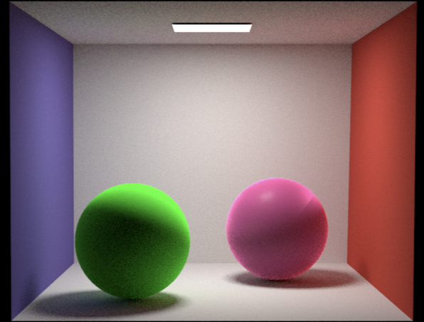

Implementation of Monte Carlo Rendering and Disney BRDF in PyTorch
How to use code to recreate that Disney wonder we all love! ✨

(yes I know this is just two balls...but look at the shading!)
About the project
This project was built on top of a Monte-Carlo path tracing renderer built in PyTorch as part of my advanced graphics course at UMD (CMSC740 w/ Prof. Zwicker). A skeleton code-base was provided to us as a way to complete course assignments and implement various advanced computer graphics techniques such as sample warping, multiple-importance sampling, neural radiosity, and more!
For my final course project, I used this renderer as the base to implement the Disney "principled" BRDF.
NOTE: I am unable to release all of my code for this project, because the base is a private implementation used for the course!
Motivation/Background
BRDFs, or bi-directional reflectance distribution functions, are mathematical functions to represent appearance characteristics of materials. This implemented as a continuous function across a surface, describing how light should reflect or scatter at each point.
In the technical report "Physically Based Shading at Disney" (linked earlier), the authors describe a new BRDF they implemented with input from graphic artists. It is called "principled", because they prioritize artistic control and ease of use, at times approximating "true" physical accuracy.
The result is a shading system with over 10 parameters, allowing appearance to be fine-tuned, demonstrated in various Disney works such as "Wreck-It Ralph"!
Implementation
To add the functionality of the Disney BRDF, there are several important functions to implement.
Due to the Monte-Carlo approach of my renderer, light is modeled as large PyTorch tensors of rays (origins and directions), which are then cast out into the 3D scene, calculating what objects they intersect and how that affects the intensity of light they "carry". To render the entire scene, we take many samples per pixel of these rays, essentially integrating over all the light in the scene and creating a nice picture (hopefully).
Therefore, in contrast to similar existing implementations online that deal with single vectors, I had to approach this in a batched context, performing operations on Tensors of 3D vectors rather than the vectors individually.
After creating a Disney BRDF Python class, I first implement a function that handles sampling distributions depending on the various parameters. To make the parameters in the Disney BRDF work, this involved implementing various sampling functions such as Cosine-Hemisphere sample warping, Fresnel terms, GGX distributions, and more.
Next, we must implement the evaluation function, or how the final colors of pixels is calculated. To do this, I borrowed the existing path tracing structure from my original renderer, then modified it to evaluate light contributions based on functions determined by the Disney parameters.
Using LLMs to Control Rendering?
As a secondary experiment, I explored the possiblity of using an LLM (gpt-4o in this case) to control the parameters of the BRDF. Despite the Disney report emphasizing controllability, I found the parameters still a bit hard to tune and somewhat unintuitive (although I am not a graphic artist to be fair...).
With over 10 scalar parameters that can be set anywhere from 0 to 1, I found myself quite confused on how to set them correctly to get the appearance I wanted. Certain parameters like "specularity" or "metallic" made a lot of intuitive sense, allowing my to just set them to high numbers to make a shiny ball. However, when you combine them all together and throw in more complicated parameters, it becomes quite difficult to get the results I wanted.
My solution here was to use gpt-4o to generate the set of parameters, testing if it has inherent understanding of how BRDF terms relate to appearance. The results were quite promising, with simple natural language prompts producing parameter values that rendered images quite accurate to the intended prompt. For example, when prompted to create "two copper spheres", the model gave parameters that produced some pretty convincing results (will insert image later).
Results
Full details can be found in my technical report but here are some highlights of pictures I rendered using my implementation! (insert here soon)
Future Work
In the future, I plan to further explore how computer graphics algorithms can create amazing scenes. Rather than just implementing an existing BRDF, I also would like to experiment with creating my own shading system, perhaps controlled by an LLM interface to even further imporve ease-of-use. On that end, I intend to try using structured outputs to improve the reliability of LLM outputs, which is a problem I faced during my experiments (I ended up manually editing the outputs before passing them to my renderer).